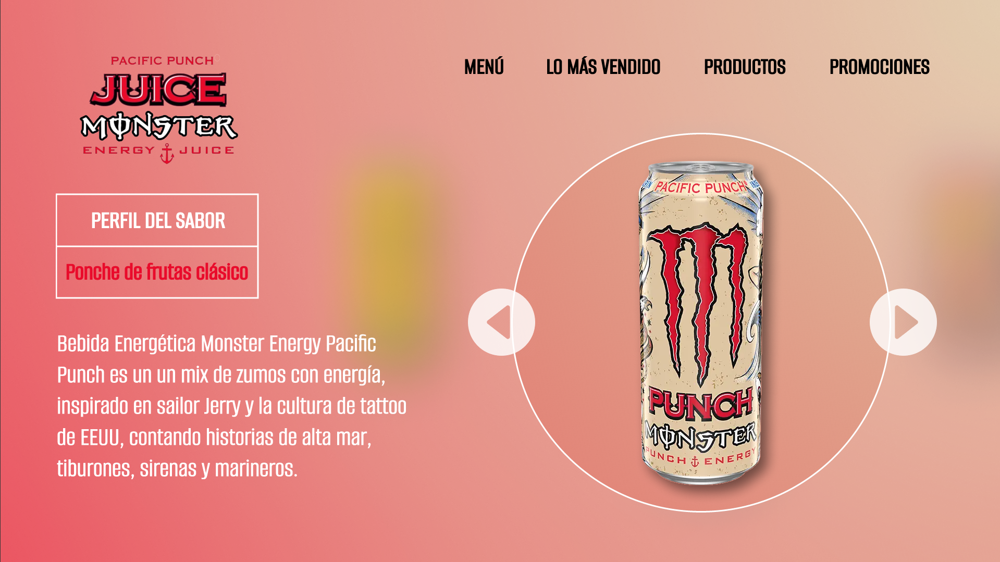

Bike More

Una selección de proyectos de UX que he realizado recientemente.
🡣🡣🡣
Se planteó crear una aplicación con una narrativa. Para esta propuesta decidí crear un pequeño juego con selección múltiple.
Conforme progresas o decides terminar la historia se presentan múltiples finales.
Para el juego decidí mantener un estilo limpio y vectorizado. Cree ilustraciones siguiendo dicho estilo con Illustrator y animando dentro de figma. Para la organización de la aplicación mantuve un orden horizontal al igual que un libro.

Se planteó crear una pagina dedicada a la venta de productos para ciclistas. Para esta propuesta trabajé sobre las necesidades de un target especifico. Necesidades que van desde la interacción hasta la experiencia visual.

Para la pagina decidí trabajar sobre un estilo moderno, en donde predomine el negro y el blanco. La información presentada va directo al punto, siguiendo las necesidades de los clientes que se me presentaron. Junto a este estilo se encuentran fotografías y pequeñas animaciones para hacer la experiencia más atractiva. Además de un diseño responsivo capaz de adaptarse a múltiples plataformas.

Se planteó crear una rediseño de un apartado de una pagina existente. Para este trabajo decidí enfocarme en la pagina web de Monster Energy Drink. Específicamente la colección de Monster Juice
Con el rediseño jugué con los diseños y colores de cada lata de Monster Juiced, convirtiendo la experiencia del usuario en una actividad más inmersiva, en la que tienes la opción de ir directamente a tu selección o explorar las otras opciones.